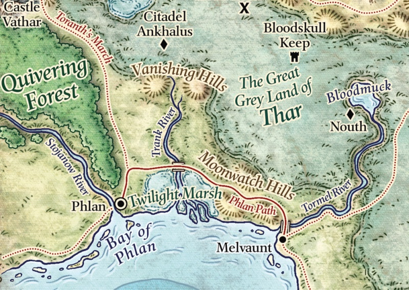

Phlan
Connaître la situation de Phlan, c'est comprendre ses nombreuses épreuves et tragédies.
– Seigneur Sage de Phlan, 1489 CV
Fondée en 367 CV, dix ans après Nordonjon [Northkeep], la ville de Phlan, au nord-ouest de la Mer de Lune, a été rasée et reconstruite à maintes reprises, les nouveaux bâtiments poussant sur les ruines des précédentes incarnations. Cela a formé au fil du temps de vastes tunnels, égouts et autres endroits cachés sous et dans toute la ville où les bruits de construction résonnent en permanence. Mais bien qu'étant une ville brutale du nord de la Mer de Lune, Phlan se développe, le commerce continue lentement, et la ville est maintenant plus peuplée qu'elle ne l'a été depuis de nombreuses années. Toutefois, de là à dire que la situation est stable...
Passé récent
En 1306 CV, l'invasion de dragons connue sous le nom de la Ruée des Dragons, et qui balaya le Nord, tomba sur Phlan. En partie à cause de la guerre qui opposait alors la Mer de Lune à Mulmastre, aucune des autres villes de la région ne vint en aide à Phlan, qui fut de nouveau dévastée. Lorsque la ville fut reconstruite, un esprit maléfique connu sous le nom de Tyranthraxus corrompit et posséda un dragon de bronze nommé Srossar, en 1340 CV, après l'avoir convaincu de se baigner dans une Fontaine de Lumière qui avait été creusée sous les ruines de Château Valjevo. Tyranthraxus sera plus tard découvert puis battu par un groupe d'aventuriers mais, dans sa fuite, il transforma la Fontaine de Lumière en une piscine d'eau non-magique qui sera plus tard recouverte lors de la reconstruction du château, et son emplacement oublié.
Phlan connaîtra plus de dix ans de paix jusqu'au Vol des Dragons en 1356 CV, qui décima de nouveau la ville. Ses ruines furent alors occupées par un grand dracosire qui sera plus tard tué, et la ville récupérée par Château-Zenthil en 1375 CV. En moins de cinq ans, le précédent système de gouvernement de la ville, le Conseil des Dix, fut remplacé par la tyrannie de Cvaal Daoran, Maître de la haine du Zhentarim. L'ascension de Daoran comme Seigneur protecteur de Phlan sauva toutefois la ville pendant la guerre du Fléau des Ombres [Shadowbane war] en 1383 CV. Ayant forgé une alliance avec les êtres féeriques maléfiques de la forêt Frémissante [Quivering forest] à proximité, Phlan fut épargnée et non pas détruite, comme Château-Zhentil et la Citadelle du Corbeau, des mains des néthérisses. Ensuite, après avoir tué l'un des princes de l'ombre, Cvaal déclara sa position de Seigneur protecteur héréditaire. Le Zhentarim n'eut alors plus de contrôle direct sur la ville.
Presque un siècle plus tard, en 1480 CV, les attaques des barbares du nord conduisirent à un afflux de réfugiés dans Phlan, ce qui augmenta considérablement sa population (de 4 000 à 20 000 habitants). A cette époque, le petit-fils du Seigneur protecteur Daoran, Anivar Daoran, avait déjà hérité du Trône de cinabre. Mais celui-ci se révéla être un noble lâche et un gouvernant aussi paranoïaque qu'inefficace. Son mépris pour les responsabilités inhérentes à son poste ne surpassait que celui qu'il avait pour ses sujets.
Phlan aujourd'hui
PHLAN AUJOURD'HUI
Ce chapitre décrit la ville au début de l'époque de la Tyrannie des Dragons, en 1489 CV.
En 1488 CV, le Seigneur protecteur Anivar Daoran décéda subitement dans ce qui semble ne devoir être rien de plus qu'un accident de construction pendant les rénovations de Château Valjevo. N'ayant laissé aucun héritier, c'est le Chevalier commandant du Poing Noir, Ector Brahms, qui fut déclaré Seigneur régent du Trône de cinabre. Mais la position du Seigneur régent sur le trône est fragile. Alors, pour maintenir l'ordre, celui-ci a utilisé son emprise sur le Poing Noir et le Trône de cinabre pour déclarer la loi martiale, contenant la population par la peur. Toutefois, pour diriger la ville, le Seigneur régent a besoin de l'aide des familles nobles et des quatre guildes commerçantes (Maison Sokol, Maison Jannarsk, Maison Cadorna et Maison Bivant), lesquelles sont toutes réticentes à apporter leur plein soutien tant qu'elles n'en connaîtront pas les bénéfices.
Ainsi, la loi martiale n'a pas évité le chaos. Peu de temps après la mort de Daoran, la Salle du Seigneur Noir fut pillée et incendiée. Seules des pierres noircies demeurent là où se dressait autrefois ce grand temple de Baine, car les ruines ont depuis été récupérées par les adeptes du dieu de l'aube, Lathandre. Les disciples du Seigneur du matin tentent d'en faire un lieu de réconfort et un refuge dans cette ville tumultueuse, même si leur petit sanctuaire côtoie ceux plus actifs d'Umberlie et d'Aurile. De plus, et malgré l'absence d'un temple, la foi de Baine reste forte parmi les membres du Poing Noir. La situation est donc critique, mais une petite lueur illumine Phlan : l'ordre du Suaire silencieux. En 1380 CV, comme pour démontrer son nouveau pouvoir, le Maître de la haine Cvaal Daoran légua le cimetière infesté et envahi de morts-vivants de Vilhingen à un petit contingent de fidèles de Kélemvor. Ceux-ci travaillèrent régulièrement et consciencieusement afin de mettre fin à la menace des morts-vivants, et nettoyèrent méticuleusement le cimetière sauvage avec l'aide des druides de l'Enclave d'émeraude, jusqu'à ce que l'endroit devienne un bel et ombragé lieu de repos libre de tout danger autour du temple érigé en son centre. L'ordre, sous le commandement du Guide des morts Yovir Glandon, se débat pour garder son indépendance vis à vis du Trône de cinabre et reste à l'écart des affaires politiques.
{kind=link}
Carte de Phlan
1600 x 1152
Suite à la déclaration de la loi martiale, le commerce s'essouffle à Phlan. Le Seigneur régent a annulé un grand nombre de projets de construction en ville, devant faire avec un trésor appauvri. Les guildes rivalisent avec les familles nobles pour le contrôle des richesses et des affaires qui restent en ville, espérant compenser leurs pertes de revenus. Les salaires ont chuté et les prix ont grimpé en flèche. Le travail est rare et les constructions dans les parties en ruine de la ville restent inachevées. Les Accueillants ont changé leur statut de guilde des voleurs pour celui de héros vigilants du peuple, et fustigent maintenant les guildes commerçantes qui, d'après eux, ont abandonné les citoyens sous l'autel de leur avidité. Ils sont d'ailleurs pour cela pourchassés par le Poing Noir, et toute personne avec une oreille manquante, symbole d'appartenance à la guilde, est emprisonnée, jugée et pendue. Chaque jours de nouveaux corps se balancent sous la Porte de Stojanow.
Le Poing Noir maintient l'ordre donc, mais jusqu'à un point, même si ce point est au bout d'une épée. La justice est sélectivement infligée selon la capacité de l'accusé à pouvoir payer des pots de vin et corrompre les gardes, ou selon son habilité à naviguer au sein de la grosse bureaucratie des quelques vrais croyants qui s'efforcent de tenir le gouvernement. Étant donné que les membres du Poing Noir ont la capacité de juger ceux qu'ils considèrent criminels et de rendre la justice sur place, les citoyens les évitent. Phlan est donc en fait une ville de non-droit, vestige de ce qu'elle était autrefois et qui a énormément de mal à redevenir comme avant. Depuis plus d'un millénaire, elle a été décimée de nombreuses fois par ses ennemis, et il est ironique de constater que maintenant elle se trouve au bord de la ruine dans tous les sens du terme. Si Phlan veut être sauvée, des héros doivent se lever.

Écrit par Greg Marks, traduit par blueace